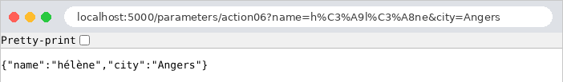
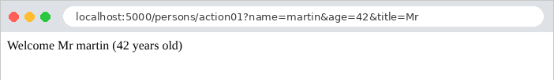

3. Das Modell einer Aktion
Eine Aktion benötigt Informationen, die der Browser sendet: die Parameter der URL ([?name=martin&age=42]), Formularfelder, den JSON-Rumpf der Anfrage und manchmal einen HTTP-Anfrage-Header. Der ursprüngliche Kurs bezeichnet alle diese Informationen als das Modell der Aktion. Dieses Kapitel zeigt, wie eine Aktion diese Informationen abruft, in den richtigen Typ umwandelt und validiert. Dieser Vorgang heißt Data-Binding.
[Flask] ist hier viel minimalistischer als andere Frameworks: Es stellt den Zugriff auf die Anfrageinformationen in Form von Zeichenketten bereit und hört dort auf. Das Umwandeln von ["42"] in die Ganzzahl 42, das Prüfen, dass ein Name mindestens zwei Zeichen hat, und das Zusammenfügen der Felder zu einem Objekt – all das ist Aufgabe der Anwendung. Wir tun dies zuerst von Hand (Beispiel 07) und dann mit der Bibliothek [Pydantic] (Beispiele 08–12), die ein Modell durch eine Klasse beschreibt, in der jedes Feld seinen Typ und seine Einschränkungen angibt. Im nächsten Kapitel werden die HTML-Formulare von einer anderen Bibliothek behandelt, [WTForms], die eigens dafür entworfen wurde; [Pydantic] bleibt das natürliche Werkzeug für die Parameter einer URL und für die JSON-Rümpfe der API.
Hinweis zur Terminologie: Im folgenden Kapitel bezeichnet das Wort „Modell“ in erster Linie die Daten, die eine Aktion an ihre View übergibt. Das Modell einer Aktion im Sinne dieses Kapitels ist das, was sie empfängt.
Die Beispiele 07 bis 12 werden auf dieselbe Weise ausgeführt wie die des vorherigen Kapitels: Öffnen Sie ein Terminal im Beispielverzeichnis, bei aktivierter virtueller Umgebung ([python app.py]); [Ctrl-C] beendet den Server. Ihre [app.py]-Dateien sind einander alle ähnlich: eine Factory [create_app] , die die Anwendung erstellt, den JSON-Provider konfiguriert (Akzente erhalten, Schlüssel in ihrer ursprünglichen Reihenfolge; siehe Beispiel 03) und einen Blueprint registriert. Wir kommentieren sie nur, wenn sie etwas Neues einführen.
3.1. Beispiel 07: Die Parameter der URL
Die Parameter der URL sind der Teil, der auf [?] folgt: [?name=martin&age=42]. Dieser Teil heißt Query-String (*query string*). Jeder Parameter ist ein Paar der Form [name=value]; die Paare sind durch [&] getrennt. Die Datei [controllers/parameters.py]:
- Zeile 11: [request.args] enthält die Parameter der URL, die bereits von [Werkzeug] decodiert wurden. Dies ist ein spezielles Dictionary, ein [MultiDict], das, wie wir in Beispiel 10 sehen werden, mehrere Werte pro Schlüssel akzeptiert. Seine Methode [get] gibt den Wert eines Parameters zurück oder [None] , falls er fehlt. Anders als [request.args["name"]], das bei einem fehlenden Parameter eine Ausnahme auslösen würde, verursacht [get] nie einen Fehler;
- Zeile 12: Die Aktion zeigt den Wert und seinen Typ an: [type(x)] ist die Klasse von [x], und [__name__] ist der Name dieser Klasse. Ein aus der URL abgerufener Wert ist immer eine Zeichenkette ([str]);
- Zeile 19: Der Parameter [type] von [get] gibt eine Konvertierungsfunktion an, die auf die Zeichenkette angewendet wird: hier [int], die Klasse der Ganzzahlen, deren Aufruf [int("42")] den Wert 42 zurückgibt. Bei einer fehlgeschlagenen Konvertierung ([int("abc")] löst einen [ValueError] aus) liefert [get] den Wert [None], ganz wie bei einem fehlenden Parameter: Die Aktion kann die beiden Fälle nicht unterscheiden, und der Eingabefehler bleibt unbemerkt;
- Zeilen 26–35: ein obligatorischer Parameter und eine manuelle Konvertierung, die die beiden möglichen Fehler unterscheidet. [abort(400, message)] beendet die Action mit einer Antwort 400 (*Bad Request* – die Anfrage ist ungültig) samt der Meldung (siehe Beispiel 03). Die Anweisung [try] / [except ValueError] fängt die Ausnahme ab, die von [int] ausgelöst wird;
- Zeile 42: ein Standardwert, der verwendet wird, wenn der Parameter fehlt (oder wenn seine Konvertierung fehlschlägt). Das ist ein typischer Fall für eine Seitennummer in einer Liste;
- Zeile 50: Die [Python]-Variable muss nicht denselben Namen tragen wie der URL-Parameter. Suchmaschinen verwenden oft einen kurzen Parameter, [q] (*query*);
- Zeile 57: [to_dict()] wandelt [MultiDict] in ein gewöhnliches [Python]-Dictionary um (wobei nur der erste Wert jedes Parameters beibehalten wird), das die Action zurückgibt: [Flask] wandelt es in JSON um (siehe Beispiel 03).
Testen wir jede Action mit [curl]. Zuerst ist ein Parameter vorhanden, dann fehlt er:
Die Anführungszeichen um die URL sind in einem Terminal notwendig: Ohne sie würde die Shell [&] (das unter [Linux] einen Befehl im Hintergrund ausführt) und [?] interpretieren. Ein Wert mit Leerzeichen oder Sonderzeichen muss in der URL codiert werden: Ein Leerzeichen wird zu [%20], und [&] wird zu [%26] (sonst würde es zwei Parameter trennen). Der Browser erledigt das automatisch; mit [curl] müssen Sie es selbst ausschreiben. [Werkzeug] decodiert den Wert, bevor er in [request.args] gespeichert wird:
Die Konvertierung mit [type=int], die zunächst gelang und dann fehlschlug:
Der obligatorische Parameter der Action 03, zunächst fehlend und dann ungültig:
Der Standardwert und der umbenannte Parameter:
Schließlich alle Parameter auf einmal. Der Parameter [name] erscheint zweimal: [to_dict()] behält nur den ersten Wert.
Das Alter blieb ein String (["42"], in JSON in Anführungszeichen): Es wurde keine Konvertierung angefordert. In einem Browser (hier [Chromium]) erscheint JSON in einer einzigen Zeile: [Flask] rückt JSON nur im Debug-Modus ein, und der Screenshot wurde ohne diesen erstellt; das Kontrollkästchen „Pretty-print“ würde es eingerückt anzeigen. Übrigens zeigt die Adressleiste die Codierung von Umlauten und Akzentzeichen in der URL ([é] wird zu [%C3%A9], mit seinen zwei Bytes in [UTF-8]):

Dieses erste Beispiel zeigt die Grenzen des manuellen Ansatzes: Für jeden Parameter müssen Sie das Lesen, die Konvertierung sowie die Behandlung fehlender Werte und von Fehlern selbst schreiben. Bei zehn Parametern würde der Code der Action von diesen Prüfungen überwuchert. Besser ist es, zu beschreiben, was erwartet wird, und die Überprüfung einer Bibliothek zu überlassen. Genau das ist der Zweck des folgenden Beispiels.
3.2. Beispiel 08: Ein durch eine Klasse beschriebenes Action-Modell
[Pydantic] ist die am häufigsten verwendete Bibliothek zur Datenvalidierung in [Python] (sie bildet den Kern des Frameworks [FastAPI]). Sie beschreibt die von einer Klasse erwarteten Daten: Jedes Attribut hat einen Typ und optional Einschränkungen. [Pydantic] übernimmt die Konvertierung der empfangenen Daten in diese Typen und die Validierung der Einschränkungen. Es ist in der virtuellen Umgebung des Beispiels installiert (Datei [requirements.txt]).
3.2.1. Das Modell: models/person.py
- Zeile 8: Ein [Pydantic]-Modell ist eine Klasse, die von [BaseModel] erbt. Ihre Attribute werden auf Klassenebene zusammen mit ihren Typen deklariert, wie in einer [dataclass] (Beispiel 06);
- Zeile 10: Die Konfiguration des Modells. [str_strip_whitespace=True] entfernt die Leerzeichen um die empfangenen Strings: Ein als [" martin "] eingegebener Name wird vor der Validierung zu ["martin"]. Das Attribut [model_config] ist kein Feld des Modells: [Pydantic] erkennt diesen reservierten Namen;
- Zeile 13: das Feld [name]. [Annotated[str, Field(...)]] liest sich als „der Typ [str], annotiert mit [Field(...)]“. [Annotated] aus dem Standardmodul [typing] erlaubt es, einem Typ zusätzliche Informationen anzufügen – Informationen, die [Python] ignoriert, die aber die Bibliotheken auslesen: hier die Einschränkungen von [Pydantic], eine Länge von 2 bis 20 Zeichen ([min_length], [max_length]). Das Feld hat keinen Standardwert: Es ist obligatorisch;
- Zeile 15: der Typ [int]: [Pydantic] konvertiert den String ["42"] in die Ganzzahl 42 und lehnt ["abc"] ab. Die Einschränkungen [ge] (*greater or equal*) und [le] (*less or equal*) begrenzen den Wert. Für strikte Ungleichungen gibt es außerdem [gt] und [lt];
- Zeile 17: [Literal["Mr", "Mme", "Melle"]] ist der Typ der drei aufgeführten Werte, und nur dieser;
- Zeile 19: [EmailStr] ist der Typ einer E-Mail-Adresse; [Pydantic] validiert ihre Syntax mithilfe der Bibliothek [email-validator] (die ebenfalls durch [requirements.txt] installiert wird). [EmailStr | None]: eine Adresse oder [None]. Der Standardwert [= None] macht das Feld optional.
Dieses Modell beschreibt die erwarteten Daten; es enthält keine Validierungsanweisungen. Man spricht von einem deklarativen Stil.
3.2.2. Die Action: controllers/persons.py
- Zeile 16: Die Klassenmethode [model_validate] erzeugt aus einem Dictionary – hier demjenigen, das die URL-Parameter enthält – ein [PersonModel]-Objekt. Sie führt zwei Schritte in dieser Reihenfolge aus: - Binding: Jeder Wert des Dictionarys wird dem gleichnamigen Feld zugewiesen, nachdem er in den Typ des Feldes konvertiert wurde (["42"] → 42); - Validierung: Die Einschränkungen jedes Feldes werden geprüft (Länge, Grenzen, zulässige Werte usw.).
- Schlägt einer der beiden Schritte fehl, löst [model_validate] eine [ValidationError]-Ausnahme aus, die eine Liste aller Fehler enthält (nicht nur des ersten). Die Action behandelt sie nicht: Sie bricht ab; wer sich darum kümmert, sehen wir gleich;
- Zeile 19: [model_dump()] gibt das Objekt als Dictionary zurück, das [Flask] in JSON umwandeln kann;
- Zeile 20: der Typ des Alters, um zu zeigen, dass die Konvertierung stattgefunden hat.
3.2.3. Fehlerbehandlung: app.py
- Zeilen 17–21: Der Dekorator [@app.errorhandler(ValidationError)] registriert einen Exception-Handler: Löst eine Action eine [ValidationError] (oder eine Ausnahme einer abgeleiteten Klasse) aus, ruft [Flask] diese Funktion auf, übergibt ihr die Ausnahme als Parameter und liefert ihren Rückgabewert als Antwort zurück. Auf Anwendungsebene deklariert, gilt der Handler für alle Actions: Jede Action, die ein Modell validiert, profitiert davon, ohne eine einzige Zeile Fehlerbehandlungscode schreiben zu müssen;
- Zeile 19: [e.errors()] gibt die Liste der Fehler zurück. Jeder Fehler ist ein Dictionary; wir behalten zwei Informationen: [loc] (*location*), das betroffene Feld in Form eines Tupels ([("name",)]; ein längeres Tupel zeigt Beispiel 10), und [msg], die Meldung. Der Ausdruck [[... for err in e.errors()]] ist eine List Comprehension: Sie erzeugt eine Liste, indem der Ausdruck links auf jedes Element angewendet wird;
- Zeile 21: ein Tupel [(body, code)] (siehe Beispiel 03): ein Dictionary, das in JSON umgewandelt wird, und der Code 400.
3.2.4. Ausführung
Ein gültiges Modell:
Das Alter ist tatsächlich eine Ganzzahl geworden (ohne Anführungszeichen in JSON), und die fehlende Adresse ist [None] ([null] in JSON). Ein von Leerzeichen umgebener Name ([%20]) und eine vorhandene Adresse:
Keine Parameter: Die drei obligatorischen Felder fehlen.
Vier ungültige Felder auf einmal:
Alle Fehler werden auf einmal gemeldet, sodass der Benutzer alles in einem Zug korrigieren kann. Die Meldungen sind auf Englisch: [Pydantic] wird nicht übersetzt. Das folgende Beispiel ersetzt sie durch eigene Meldungen.
3.3. Beispiel 09: Von der Action durchgeführte Validierung
In Beispiel 08 unterbricht ein ungültiges Formular die Action, und der Handler der Anwendung antwortet. Das ist praktisch für eine API, deren Clients Programme sind, die eine standardisierte Fehlerantwort erwarten. Eine Webseite zieht es jedoch oft vor, das Formular mit den Fehlermeldungen erneut anzuzeigen: In diesem Fall muss die Action entscheiden, wie ein ungültiges Modell behandelt wird. Das Modell [models/person.py] ist das aus Beispiel 08.
3.3.1. Benutzerdefinierte Meldungen: models/messages.py
- Zeilen 5–14: Jeder Fehler in [Pydantic] hat einen Typ und eine eindeutige Kennung (["missing"] für ein fehlendes Feld, ["string_too_short"] für einen zu kurzen String usw.), unabhängig von der englischen Meldung. Das Dictionary [MESSAGES] ordnet jedem Typ eine eigene Meldung zu. Einige enthalten Platzhalter wie [{min_length}], [{ge}] ...: Die Dokumentation von [Pydantic] liefert für jeden Fehlertyp die Werte seines Kontexts;
- Zeilen 20–21: der Name des Feldes, das den Fehler verursacht, entnommen aus dem Tupel [loc]. [".".join(...)] fügt die Elemente des Tupels – in Strings umgewandelt – zusammen und trennt sie durch Punkte;
- Zeilen 25–30: unsere eigene Fehlermeldung. [MESSAGES.get(...)] gibt [None] für einen Fehlertyp zurück, der im Dictionary nicht gefunden wird; in diesem Fall wird die englische Meldung von [Pydantic] verwendet. Andernfalls [format] ersetzt es jedes Vorkommen von [{name}] in der Meldung durch den gleichnamigen Wert aus dem Kontext: ["{min_length} character(s) at least".format(min_length=2)] ergibt ["2 character(s) at least"]. Die Schreibweise [**dictionary] übergibt die Einträge des Dictionarys als benannte Parameter; [error.get("ctx", {})] gibt für einen Fehler ohne Kontext ein leeres Dictionary zurück.
Diese Technik (Übersetzen anhand des Fehlertyps) wird in der Fallstudie verwendet: Dort werden Meldungen durch Schlüssel identifiziert, die in die Sprache des Benutzers übersetzt werden.
3.3.2. Die Action: controllers/persons.py
- Zeilen 14–19: Die Action selbst fängt die [ValidationError] in einem [try]/[except]-Block ab. Tritt ein Fehler auf, erzeugt sie eine HTML-Liste der Fehler ([<ul>], ein [<li>]-Tag pro Fehler);
- Zeile 22: bei Erfolg eine Willkommensnachricht. Der Name wird durch die Funktion [escape] der Bibliothek [markupsafe] (installiert mit [Flask]) geleitet. [escape] ersetzt Zeichen, die in HTML eine Bedeutung haben ([<], [>], [&], ["], [']), durch ihre Entitäten ([<], [>] ...): Sie werden unverändert angezeigt, statt interpretiert zu werden. Ohne diese Vorsichtsmaßnahme könnte ein Benutzer einen „Namen“ eingeben, der HTML oder sogar [JavaScript] enthält und im Browser jedes Betrachters der Seite ausgeführt würde. Das ist die häufigste Sicherheitslücke im Web: die Skript-Injektion (*XSS*, *Cross-Site-Scripting*). Der Titel und das Alter benötigen diesen Schutz nicht: Ihre Werte wurden vom Modell validiert (einer von drei zulässigen Werten, eine Ganzzahl). Im nächsten Kapitel wird die [Jinja2]-View-Engine dieses Escaping automatisch für jeden in eine Seite eingefügten Wert übernehmen.
Eine gültige Eingabe, gefolgt von einer Eingabe mit vier Fehlern:


Die Rohantwort auf die zweite Anfrage und die Antwort für einen Namen, der HTML enthält:
Der Name [<b>martin</b>] (in der URL als [%3Cb%3E...] codiert) wird unverändert angezeigt, ohne fett dargestellt zu werden: Seine Tags wurden entschärft. Beachten Sie, dass die Antwort diesmal den Statuscode 200 hat: Die Action hat sich dafür entschieden, eine normale Seite zurückzugeben, die die Fehler enthält.
3.4. Beispiel 10: Mehrfache Parameter
Derselbe Parameter kann mehrfach in einer URL vorkommen: [?color=red&color=green]. Das sendet ein Browser für eine Gruppe von Kontrollkästchen mit demselben Namen oder für eine Mehrfachauswahlliste (siehe nächstes Kapitel). Die Datei [controllers/arrays.py]:
- Zeile 14: [get] gibt nur den ersten Wert des Parameters zurück;
- Zeile 21: [getlist] gibt alle seine Werte in einer Liste zurück, die leer ist, wenn der Parameter fehlt. Das ist das Besondere an [MultiDict]: Es behält die Liste der Werte für jeden Schlüssel;
- Zeilen 27–34: Die Liste wird mit einem [Pydantic]-Modell validiert. Diesmal wird das Modell durch einen gewöhnlichen Aufruf erzeugt, [ChoiceModel(color=colors)], wobei die Felder als benannte Parameter übergeben werden: Das entspricht [model_validate] für ein Dictionary. Das erzeugte Objekt dient nur der Validierung: Es wird nicht aufbewahrt. Der Ausdruck [not errors] ist für eine leere Liste gleichbedeutend mit [True].
Das Modell [models/choice.py]:
- Zeile 10: Der Typ [list[Literal["red", "green", "blue"]]] ist der einer Liste, in der jedes Element eine von drei Farben ist. Die Einschränkung [min_length=1], auf eine Liste angewendet, bezieht sich auf die Anzahl der Elemente: Es muss mindestens eines vorhanden sein.
Die Datei [models/messages.py] ist die aus Beispiel 09. Die Ergebnisse:
Die Validierung war zunächst erfolgreich, schlug dann wegen einer unbekannten Farbe fehl und anschließend wegen einer leeren Liste:
Der Fehler „unknown value“ bezieht sich auf [color.1]: Das Fehlertupel [loc] ist [("color", 1)]; das Feld und der Index des problematischen Elements in der Liste (des zweiten, da die Indizes bei 0 beginnen).
3.5. Beispiel 11: Die Parameter einer POST-Anfrage
Die vorherigen Beispiele verwendeten GET-Anfragen, deren Parameter in der URL enthalten sind. Eine POST-Anfrage überträgt ihre Daten in ihrem Body, hauptsächlich in zwei Formen:
- Felder eines HTML-Formulars: Der Body hat dieselbe Syntax wie ein Query-String ([name=martin&age=42]), und sein Typ (Header [Content-Type]) lautet [application/x-www-form-urlencoded];
- ein JSON-Dokument, das von einem Programm gesendet wird ([JavaScript] auf einer Seite, Client einer API ...): Der Typ ist [application/json].
Die Datei [controllers/post.py]:
- Zeile 13: [post.post(...)]: Das erste [post] ist der Blueprint, das zweite die Methode, die eine Route für die HTTP-Methode POST deklariert (siehe Beispiel 02);
- Zeile 16: [request.content_type] ist der Header [Content-Type] der Anfrage;
- Zeile 18: [request.form] enthält die Felder eines per POST gesendeten Formulars. Wie [request.args] ist es ein [MultiDict]. [to_dict(flat=False)] erzeugt tatsächlich ein Dictionary, in dem jeder Wert die Liste der Werte des Feldes ist;
- Zeile 26: [request.get_json()] deserialisiert einen JSON-Body: Der JSON-Text wird zu einem [Python]-Objekt (einem Dictionary für ein JSON-Objekt, einer Liste für ein JSON-Array ...). Wenn der Body nicht als JSON deklariert ist, löst [get_json] einen Fehler 415 aus (*Unsupported Media Type*); ist er es, aber der Text fehlerhaft, tritt ein Fehler 400 auf;
- Zeile 32: ein Feld, interpretiert als URL-Parameter;
- Zeilen 38–45: das [PersonModel]-Modell aus Beispiel 08, diesmal an die Formularfelder gebunden. Der Code ist derselbe wie bei den URL-Parametern: Nur die Quelle des Dictionarys ändert sich. [sorted] sortiert die Meldungen, um eine konsistente Antwort zu gewährleisten.
Mit [curl] sendet die Option [-d] (*data*) einen Body; die Anfrage wird dann zu einer POST-Anfrage vom Typ [application/x-www-form-urlencoded], es sei denn, die Option [-H] (*header*) gibt einen anderen Typ an. Die Option [-X POST] legt die Methode ausdrücklich fest (hier ist sie optional). Die Felder eines Formulars, einschließlich eines wiederholten Feldes:
Ein JSON-Body, der eine Ganzzahl und ein Array enthält:
Den Anführungszeichen in JSON wird ein [\] vorangestellt, damit die Befehlszeichenfolge nicht endet; unter [Linux] und [macOS] können Sie JSON auch in Apostrophe einschließen: [-d '{"name": "martin"}']. Anders als Formularfelder transportiert JSON Datentypen: Das Alter ist bereits eine Ganzzahl. Ein Body, der kein JSON ist, gefolgt von fehlerhaftem JSON:
Ein einzelnes Feld, dann dieselbe URL als GET angefordert:
Die URL existiert, aber nicht für die Methode GET: [Flask] liefert eine 405 (*Method Not Allowed*), und ihr Header [Allow] listet die akzeptierten Methoden auf ([OPTIONS] wird für jede Route automatisch von [Flask] behandelt). Schließlich das an die Formularfelder gebundene Modell, zuerst gültig, dann ungültig:
3.6. Beispiel 12: Benutzerdefiniertes Binding und benutzerdefinierte Validierung
Standardtypen reichen nicht immer aus. Dieses Beispiel zeigt drei Möglichkeiten, Binding und Validierung zu erweitern:
- ein Pfad-Converter: ein Datum im französischen Format, [23-09-2026], im Pfad der URL;
- ein Dekorator , der der Action einen Parameter liefert, der nicht aus der URL, sondern aus einem HTTP-Header stammt;
- „benutzerdefinierte“ Typen für [Pydantic]: eine Einschränkung (keine Leerzeichen) und eine Konvertierung (ein Datum im Format [dd/mm/yyyy]).
3.6.1. Ein Pfad-Converter: binding/date_fr.py
In Beispiel 02 sind wir den [Werkzeug]-Convertern begegnet: [<int:id>] akzeptiert nur eine Ganzzahl und konvertiert sie. Sie können neue schreiben.
- Zeile 9: Ein Converter ist eine Klasse, die von [BaseConverter] erbt;
- Zeile 11: Das Attribut [regex] ist ein regulärer Ausdruck , der das Format des akzeptierten Pfadsegments beschreibt: [\d] steht für eine Ziffer, [{2}] für die Wiederholung des vorangehenden Elements – hier zwei Ziffern. Das Präfix [r] vor dem String (*raw string*) verhindert, dass [Python] [\] interpretiert. Das Routing versucht nur bei einem Pfadsegment dieser Form, diesen Converter zu verwenden;
- Zeilen 14–20: [to_python] wandelt den Pfadtext in ein [Python]-Objekt um, hier in ein [date]. [datetime.strptime] (*string parse time*) parst einen String gemäß einem bestimmten Format: [%d] für den Tag, [%m] für den Monat und [%Y] für das vierstellige Jahr; [.date()] behält das Datum ohne die Uhrzeit. [strptime] prüft, ob das Datum existiert: [31-02-2026] hat das richtige Format, löst aber einen [ValueError] aus. Der Converter löst dann die [ValidationError]-Ausnahme von [Werkzeug] (nicht zu verwechseln mit der von [Pydantic]) aus: Für das Routing passt die Route nicht zur URL, was daher zu einem Fehler 404 führt, wenn keine andere Route passt;
- Zeilen 23–24: die Umkehroperation, die von [url_for] verwendet wird, um aus einem Datum eine URL zu erstellen. [strftime] (*string format time*) formatiert ein Datum.
Der Converter wird in [app.py] registriert:
- Zeile 12: [app.url_map] ist die Routing-Tabelle der Anwendung; ihr Dictionary [converters] ordnet jedem Converter einen Namen zu ([int], [path] ...). Wir fügen unseren dort unter dem Namen [datefr] hinzu. Der Eintrag muss vor denen der Blueprints stehen, die ihn verwenden.
3.6.2. Ein von einem Dekorator bereitgestellter Parameter: binding/language.py
Eine [Flask]-Action erhält die Pfadvariablen als Parameter und sonst nichts. Um ihr zusätzliche Informationen zu liefern, können wir die Action dekorieren: Der Dekorator ersetzt die Action durch eine Funktion, die die Information berechnet und dann die Action aufruft, indem sie ihr diese Information übergibt.
- Zeile 9: Ein Dekorator ist eine Funktion, die eine Funktion (hier die Action) entgegennimmt und eine andere Funktion zurückgibt (siehe Beispiel 01). Die Schreibweise [@with_language] über [def hello(...)] ist gleichbedeutend damit, nach der Definition [hello = with_language(hello)] zu schreiben;
- Zeile 13: Die Funktion, die die Action ersetzen wird. [*args] empfängt Positionsparameter in einem Tupel und [**kwargs] (*keyword arguments*) empfängt benannte Parameter in einem Dictionary. So übergibt [Flask] die Pfadvariablen ([id=3]): Die Funktion erhält sie, ohne sie kennen zu müssen;
- Zeile 16: Ein benannter Parameter, [language], wird hinzugefügt. [request.accept_languages] ist der Anfrage-Header [Accept-Language], der bereits von [Werkzeug] geparst wurde. Der Browser gibt hier die Sprachen des Benutzers in der Reihenfolge ihrer Präferenz an: [fr-FR,fr;q=0.9,en;q=0.8] (der Koeffizient [q] misst die Präferenz auf einer Skala von 0 bis 1). [best_match] wählt unter den von der Anwendung angebotenen Sprachen diejenige aus, die der Benutzer bevorzugt, oder den Wert [default] , wenn keine passt;
- Zeile 17: der Aufruf der ursprünglichen Action mit den empfangenen Parametern und dem neuen. Die Schreibweisen [*args] und [**kwargs] entpacken diesmal das Tupel und das Dictionary in Parameter;
- Zeile 12: Die Funktion [action_with_language] übernimmt den Namen ([__name__]) und die Dokumentation der Action. Das ist hier unerlässlich: [Flask] benennt jede Route nach dem Namen ihrer Funktion (das [hello] von [url_for("examples.hello")]) und würde sich weigern, zwei Routen mit demselben Namen zu registrieren, [action_with_language], wenn zwei Actions den Dekorator verwendeten.
Diesen Ansatz werden wir im gesamten Kurs wiederfinden: Die Dekoratoren [@login_required] und [@role_required] im Kapitel über die Authentifizierung sind auf dieselbe Weise aufgebaut.
3.6.3. „Benutzerdefinierte“ Typen für Pydantic: binding/types.py
- Zeilen 11–14: eine Validierungsfunktion: Sie nimmt den Wert des Feldes entgegen, gibt ihn zurück, wenn er gültig ist, und löst andernfalls einen [ValueError] aus. Die Meldung der Ausnahme wird zur Meldung des Validierungsfehlers;
- Zeile 19: Der Typ [NoSpace] ist der Typ [str], annotiert mit [AfterValidator(no_space)]: [Pydantic] ruft die Funktion auf, nachdem der Wert geprüft (und gegebenenfalls) in [str] konvertiert wurde. So können wir einmal einen Typ definieren, der in allen Modellen wie ein gewöhnlicher Typ wiederverwendet werden kann;
- Zeilen 24–30: eine Konvertierungsfunktion. Der Typ
***[date]von*[Pydantic]akzeptiert Strings im internationalen Format,***[2026-09-23]; wir wollen das französische Format,***[23/09/2026]. Die Funktion erhält den Rohwert: Ist er ein String, konvertiert sie ihn in [date]. Jeder andere Wert (zum Beispiel ein bereits erzeugtes [date]**) wird unverändert zurückgegeben; - Zeile 33: [BeforeValidator]: Die Funktion wird vor der Validierung des Typs [date] aufgerufen, der daher ein bereits erzeugtes [date] erhält.
3.6.4. Der Controller: controllers/examples.py
- Zeilen 14–18: Die Pfadvariable [day] verwendet den Converter [datefr]: Die Action erhält ein [date]. [url_for] erzeugt die URL für dieselbe Action anhand des Datums, und zwar mit der Methode [to_url] des Converters. Das Zeichen [\] am Zeilenende setzt die Anweisung in der nächsten Zeile fort; zwei aufeinanderfolgende Zeichenkettenliterale werden verkettet;
- Zeilen 23–25: Die Reihenfolge der Dekoratoren ist wichtig. Sie werden von unten nach oben angewendet: [@with_language] wandelt zuerst die Action um, dann [@examples.get] registriert die umgewandelte Funktion im Blueprint. In umgekehrter Reihenfolge würde der Blueprint die ursprüngliche Action registrieren, und der Parameter [language] würde nie geliefert;
- Zeilen 30–32: ein Modell, das die beiden „benutzerdefinierten“ Typen wie gewöhnliche Typen verwendet. Beide Felder sind optional;
- Zeilen 45–49: ein Exception-Handler, diesmal auf dem Blueprint deklariert: Er behandelt nur Ausnahmen, die von den Actions dieses Blueprints ausgelöst werden. [removeprefix] entfernt das Präfix ["Value error, "] aus der Meldung, das [Pydantic] den Meldungen von [ValueError] voranstellt. Die Antwort ist ein Tupel aus drei Elementen: dem Body, dem Code und einem Dictionary mit Headern (siehe Beispiel 03), hier für eine Antwort im Klartext.
3.6.5. Ausführung
Der Pfad-Converter:
Das Datum wird von [Python] im internationalen Format angezeigt (das ist das Ergebnis der Umwandlung eines [date] in einen String), aber die von [url_for] erzeugte URL hat wieder das französische Format. Den 31. Februar gibt es nicht: 404. Ein Datum im internationalen Format, [2026-09-23], passt nicht zu dem vom regulären Ausdruck beschriebenen Muster: ebenfalls 404.
Der Dekorator. Die Option [-H] von [curl] setzt den Header [Accept-Language]:
Ohne Header [Accept-Language] ([curl] sendet keinen) gilt die Standardsprache. Das Kapitel über die Internationalisierung greift diese Frage wieder auf, wobei der Benutzer die Sprache auswählt.
„Benutzerdefinierte“ Typen:
3.6.6. Fazit
Fassen wir die Methoden zusammen, die einer Action zur Verfügung stehen, um ihr Modell zu erhalten:
Quelle | Methode |
Pfadvariablen | die Parameter der Action, typisiert durch die Converter ([<int:id>], [<datefr:day>]) |
URL-Parameter | [request.args]: [get] (zusammen mit [type] und [default]), [getlist], [to_dict] |
Felder eines POST-Formulars | [request.form], ein [MultiDict], und ein [request.args] |
JSON-Body | [request.get_json()] |
Header | [request.headers] und bereits analysierte Objekte wie [request.accept_languages] |
Konvertierung und Validierung | ein [Pydantic]-Modell: [model_validate], [ValidationError], [e.errors()] |
Allgemeine Fehler | [@app.errorhandler] (gesamte Anwendung) oder [@blueprint.errorhandler] (ein Blueprint) |
Berechneter Parameter | Ein Dekorator, der der Action einen benannten Parameter hinzufügt |
HTML-Formulare erfordern dagegen mehr als nur Validierung: Sie müssen angezeigt, mit den Eingaben des Benutzers und etwaigen Fehlern erneut angezeigt und gegen gefälschte Anfragen geschützt werden. Das wird die Aufgabe von [WTForms] sein, das im nächsten Kapitel behandelt wird, nachdem die Views eingeführt wurden.